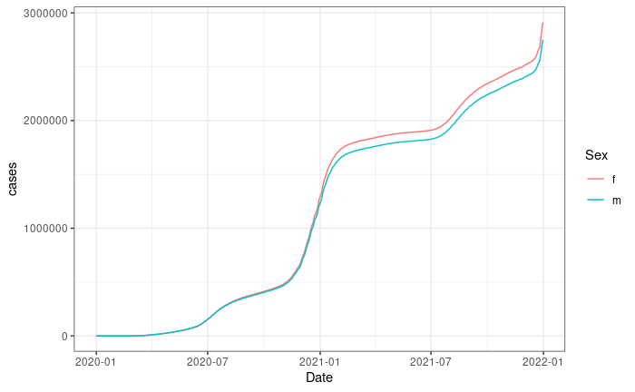
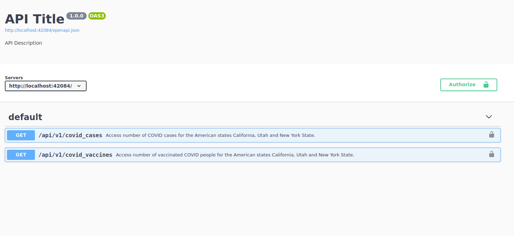
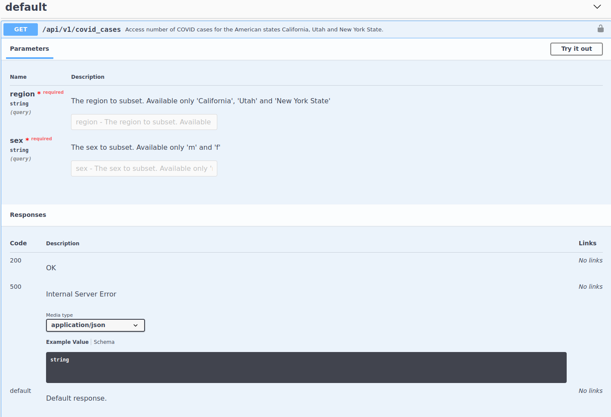
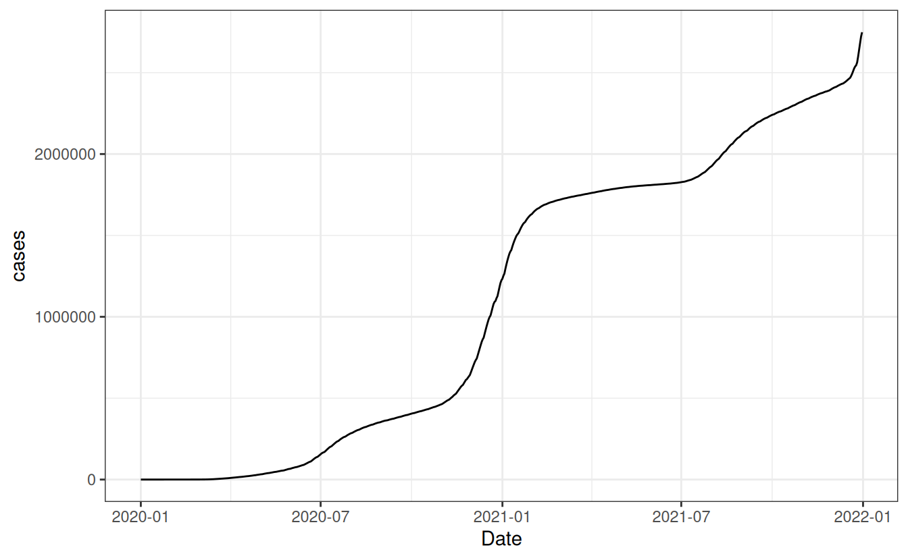
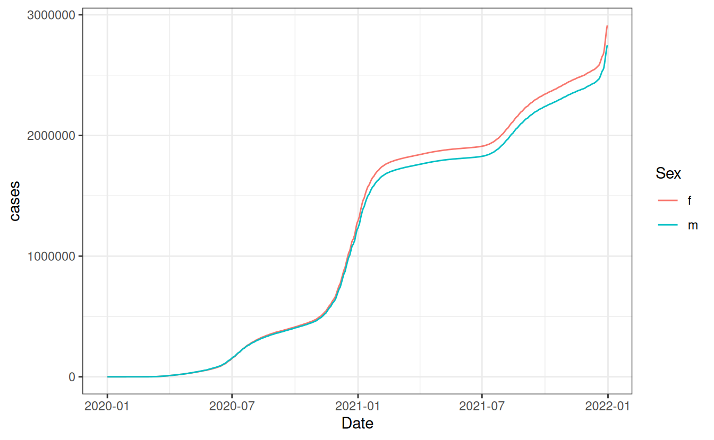

library(scrapex)
library(httr2)
library(dplyr)
library(ggplot2)11 A primer on APIs
When you make requests to an API, most probably you want to make them programmatically. By programmatically I mean to request data using a programming language. In this book we’ll do it with R but you can do this with most programming languages.
Why do you want to do this programmatically when you can just use the documentation page to make sample requests as we did in Chapter 10? For several reasons. First, you can create a scheduled program to download data on specific intervals of time. Doing that in a web browser would be tedious as you need to constantly go to your computer to manually click on some buttons and then save the data somewhere. Second, APIs are built to persist thousands of requests per minute. You might want to make 60 requests every minute. That sounds like a handful for a human clicking in a browser throughout the day, right? Third, because you can do much more within a programming language. For example, you might want to request some data from an endpoint that is then passed as input into another endpoint, which has a fallback value in case the request does not return any data. Fourth and finally, because you might want to do things in ‘real-time’ with your program. You might build a web application where, when a user clicks on a button, you grab data from an API in ‘real-time’ and on demand, and train a machine learning model with the recently requested data.
You might think APIs are a very convoluted concept at this point but you need to think of APIs as just another way to gather data. Using a programming language allows you to automate the gathering of data and add value in the data gathering process by making it more automatic, persistent and available any time. The reasons to do it programmatically are very numerous and that’s why for the remainder of this book we’ll focus on requesting data from APIs with R.
As we did in Chapter 2, throughout this chapter I’ll give you a one-to-one tour of what to expect when requesting data from an API in the wild. We’ll skip the usual ‘start from the basics’ sections to directly request data from an API and see results from your efforts right away. Before we begin, let’s load the packages we’ll use in this chapter:
As usual, we’ll be using the scrapex package. This package contains an internal API that wraps the COVerAGE-DB database. COVerAGE-DB is an open-access database including cumulative counts of confirmed COVID-19 cases, deaths, tests, and vaccines by age and sex. For more information, visit their website at https://www.coverage-db.org/.
The aim of this primer is to create a plot like this one:

This plot shows the total number of COVID cases for females and males in California. We do not have data on this on your local computer so we’ll need to request the data from an API.
11.1 Getting familiar with an API
Inside scrapex the function api_coveragedb() has a local API that was designed to be used in this book. Let’s load it:
api_covid <- api_coveragedb()
## [1] "Visit your REST API at http://localhost:40303"
## [1] "Documentation is at http://localhost:40303/__docs__/"The API is now launched in the background and we can access it. Note that when learning about a new API online you won’t have to launch any API. APIs are hosted on servers elsewhere and you’ll just need to read how to access the API. Since this is a stand-alone book (we don’t want any of our examples to depend on fast-changing websites or APIs, making most of the content in this book useless in just a few months), we use a local API that won’t change over time and thus we need to launch it ourselves.
When you do access an API, instead you’ll be directly given things like the documentation page. That we can see in the printout of the previous R call http://localhost:40303/docs/. Note that this link won’t work on your computer because you need to launch the API on your computer (remember how this is a local API?). Go to your URL and you should see something like this:

We can see that this API has two endpoints. The first one allows you to access data on the number of COVID cases for the American states California, Utah and New York State. The second one returns vaccination rates for the same three regions. As opposed to our example in Chapter 10, this API does not need any authentication so we can directly go to the first endpoint to read how it works:

First thing we see is that this endpoint has two parameters: region and sex. Both are required. Also, the documentation of each parameter tells us the valid values that can be accepted. Aside from that, we see that this endpoint returns a JSON structured response as well as the usual return codes that are standard (200 for a successful request and 500 for a standard error code). Alright, we have enough information to construct our first endpoint. Let’s go over a few things. Each endpoint is composed of three things:
- A base URL. In this case, it’s http://localhost:40303. Yours will be different because you launched it on your local computer.
- The endpoint URL of this specific endpoint. For the COVID cases, this is
/api/v1/covid_cases. - The parameters in the endpoint which are specified after a
?and each parameter is then concatenated with&.
So the complete endpoint URL for this endpoint would be http://localhost:40303/api/v1/covid_cases. How would we add parameters? We start with a ? and then add parameter=value followed by an & to concatenate with other parameters. Sounds confusing? Let’s construct it in R:
# COVID cases endpoint
api_web <- paste0(api_covid$api_web, "/api/v1/covid_cases")
# Filtering only for males in California
cases_endpoint <- paste0(api_web, "?region=California&sex=m")
cases_endpoint
## [1] "http://localhost:40303/api/v1/covid_cases?region=California&sex=m"The parameters we specified were ?region=California&sex=m. It’s not that difficult to construct these paths but rather tedious. Imagine having to construct this for an endpoint with 7 parameters. Too many & can confuse anyone and it can start to get difficult to read. Instead, the httr2 package can help us with this. With httr2 we just pass the endpoint URL and use functions to add as many parameters as we see fit.
11.2 Making your first request
Let’s start building our request in R:
# COVID cases endpoint
api_web <- paste0(api_covid$api_web, "/api/v1/covid_cases")
req <- request(api_web)
req
## <httr2_request>
## GET http://localhost:40303/api/v1/covid_cases
## Body: emptyThere we go. The request function from httr2 builds something like a placeholder for our request. It says it already has the endpoint URL (we can see it in the GET line) but it does not say anything about our parameters or headers. Let’s add the endpoint and parameters:
req_california_m <-
req %>%
req_url_query(region = "California", sex = "m")
req_california_m
## <httr2_request>
## GET http://localhost:40303/api/v1/covid_cases?region=California&sex=m
## Body: emptyThe function req_url_query constructs the endpoint by adding as many parameters as we want. Do you see the idea here? request builds a placeholder for the endpoint and then you add as many “add-ons” as you want to your request. Our “add-on” so far has just been parameters but you could hypothetically add authentication headers and a retry policy, for example:
req_california_m %>%
req_auth_basic(username = "fake name", password = "fake password") %>%
req_retry(max_tries = 3, max_seconds = 5)
## <httr2_request>
## GET http://localhost:40303/api/v1/covid_cases?region=California&sex=m
## Headers:
## * Authorization: <REDACTED>
## Body: empty
## Policies:
## * retry_max_tries : 3
## * retry_max_wait : 5
## * retry_on_failure : FALSE
## * retry_failure_threshold: Inf
## * retry_failure_timeout : 30
## * retry_realm : "localhost"Our request object also added the headers as well as a retry policy: if the request fails for some reason, try it 3 more times, waiting 5 seconds in between. If you type req_ and hit tab in most IDEs you’ll get a complete list of functions that allow you to add stuff into our request as well as extract stuff from a request. Feel free to explore these to get familiar with the capabilities of httr2.
Let’s get back to our initial request. Since we don’t need any further add-ons to our request, it should look like this:
req_california_m
## <httr2_request>
## GET http://localhost:40303/api/v1/covid_cases?region=California&sex=m
## Body: emptyWhenever we’re happy with our request, we can actually make the request with req_perform:
resp_california_m <-
req_california_m %>%
req_perform()
resp_california_m
## <httr2_response>
## GET http://localhost:40303/api/v1/covid_cases?region=California&sex=m
## Status: 200 OK
## Content-Type: application/json
## Body: In memory (1086936 bytes)Alright so we can interpret a few things out of this request. First, it was successful. The 200 status code means that it was OK, so nothing failed. Second, the response content-type is JSON, meaning the data that was sent is in JSON format. Third, the actual body of the request has data, which is now loaded in RAM (instead of on your hard drive).
Now, you might have noticed that all functions for working with your request in httr2 start with req_*. This means that you can easily search for all request related functions quickly. Similarly, for the response of an API, you can do the same but with resp_*. All response functions allow you to perform or extract stuff on a response object. We can extract the status code for example:
resp_status(resp_california_m)
## [1] 200Or the content type:
resp_content_type(resp_california_m)
## [1] "application/json"Then how do we extract the body containing the data from the request? It depends on the content type that was returned. In our case it’s JSON so we can use resp_body_json. Whenever you receive a response, depending on the type of data you receive, your best bet is to look at resp_body_* for the content type of your request. So for our case, we can safely extract it:
resp_body_california_m <-
resp_california_m %>%
resp_body_json(simplifyVector = TRUE) %>%
as_tibble()
resp_body_california_m
## # A tibble: 5,848 × 11
## Country Region Code Date Sex Age AgeInt Metric Measure Value templateID
## <chr> <chr> <chr> <chr> <chr> <chr> <int> <chr> <chr> <int> <chr>
## 1 USA Calif… US-CA 2020… m 0 10 Count Cases 0 USA_CDC_c…
## 2 USA Calif… US-CA 2020… m 10 10 Count Cases 0 USA_CDC_c…
## 3 USA Calif… US-CA 2020… m 20 10 Count Cases 2 USA_CDC_c…
## 4 USA Calif… US-CA 2020… m 30 10 Count Cases 2 USA_CDC_c…
## 5 USA Calif… US-CA 2020… m 40 10 Count Cases 1 USA_CDC_c…
## 6 USA Calif… US-CA 2020… m 50 10 Count Cases 1 USA_CDC_c…
## 7 USA Calif… US-CA 2020… m 60 10 Count Cases 1 USA_CDC_c…
## 8 USA Calif… US-CA 2020… m 70 10 Count Cases 1 USA_CDC_c…
## 9 USA Calif… US-CA 2020… m 0 10 Count Cases 0 USA_CDC_c…
## 10 USA Calif… US-CA 2020… m 10 10 Count Cases 0 USA_CDC_c…
## # ℹ 5,838 more rowsThere we go. We see that data from California has 5848 rows and that we have 11 columns. You’ll notice that I used the argument simplifyVector inside resp_body_json. This is because the JSON format is known as a nested format. This means that you can have columns within columns within columns and so on. That argument tries (but does not always succeed) in simplifying this structure into a data frame. With that out of the way, let’s visualize the overall number of COVID cases:
# To avoid scientific numbering
options(scipen = 231241231)
resp_body_california_m <-
resp_body_california_m %>%
mutate(Date = lubridate::ymd(Date)) %>%
group_by(Date, Sex) %>%
summarize(cases = sum(Value))
## `summarise()` has regrouped the output.
## ℹ Summaries were computed grouped by Date and Sex.
## ℹ Output is grouped by Date.
## ℹ Use `summarise(.groups = "drop_last")` to silence this message.
## ℹ Use `summarise(.by = c(Date, Sex))` for per-operation grouping
## (`?dplyr::dplyr_by`) instead.
resp_body_california_m %>%
ggplot(aes(Date, cases)) +
geom_line() +
theme_bw()
Great, we can see a rather big jump starting 2021 for California. Let’s perform the same request as before but replace the sex with females to compare the trend. After it, let’s count the number of cases per date as we did for males and combine everything into one data frame. Finally, let’s produce the same plot as before but for both sexes:
# Perform the same request but for females and grab the JSON result
resp_body_california_f <-
req %>%
req_url_query(region = "California", sex = 'f') %>%
req_perform() %>%
resp_body_json(simplifyVector = TRUE) %>%
as_tibble()
# Add the total number of cases per date for females
resp_body_california_f <-
resp_body_california_f %>%
mutate(Date = lubridate::ymd(Date)) %>%
group_by(Date, Sex) %>%
summarize(cases = sum(Value))
## `summarise()` has regrouped the output.
## ℹ Summaries were computed grouped by Date and Sex.
## ℹ Output is grouped by Date.
## ℹ Use `summarise(.groups = "drop_last")` to silence this message.
## ℹ Use `summarise(.by = c(Date, Sex))` for per-operation grouping
## (`?dplyr::dplyr_by`) instead.
# Combine the female cases with the male cases
resp_body_california <- bind_rows(resp_body_california_f, resp_body_california_m)
# Visualize both female and male cases
resp_body_california %>%
ggplot(aes(Date, cases, color = Sex, group = Sex)) +
geom_line() +
theme_bw()
As we see, we start to see a difference in cases right at the start of 2021 with females having a greater number of cases after 2021. Before we close the chapter, remember to kill the API that we launched. You won’t have to do it when you request data from online APIs, this is only for our local version:
api_covid$process$kill()
## [1] TRUESo there you have it. This primer gave you a very direct experience of what requesting data from an API involves. It’s usually all about studying the documentation to see what each endpoint returns, constructing URLs that directly grab the data that you want and extracting the data from the response. In the next chapter you’ll see more in depth how APIs work behind the scenes.
11.3 Exercises
- Generate the same plot that we created for males/females but for the state New York. However, construct the path manually (do not use the function
req_url_query). You might need to look at how spaces are written in URLs on the internet.
- Did the third wave of vaccination start at the same time for males and females in New York? You might need to look at the documentation of the second endpoint of the API to get acquainted with the parameters and values.
- Can you recreate the request below? You will need to look at a few
req_*functions but make sure you understand what each of thesereq_*functions does before reconstructing the request.
## <httr2_request>
## GET http://localhost:40303/api/v1/covid_cases?region=California&sex=m
## Headers:
## * Authorization: <REDACTED>
## * Content-type : "*/*"
## Body: empty
## Options:
## * timeout_ms : 10000
## * connecttimeout: 0
## Policies:
## * retry_max_tries : 5
## * retry_on_failure : FALSE
## * retry_failure_threshold: Inf
## * retry_failure_timeout : 30
## * retry_realm : "localhost"
## * throttle_realm : "localhost"- Can you make a request specifying sex but an unavailable region (Florida, for example)? What status code does it return? Look up on the internet what these status codes mean. After copying the endpoint into your browser (the entire endpoint with parameters in your browser), what message do you see?